はいふりスタンプラリーにお母さんと行ってきた
ハイスクール・フリート スタンプラリーにお母さんと行ってきました。
朝07:00に家を出て、夜22:00くらいに帰るというなんとまあ健康な生活を何ヶ月ぶりにしたことか。
順路
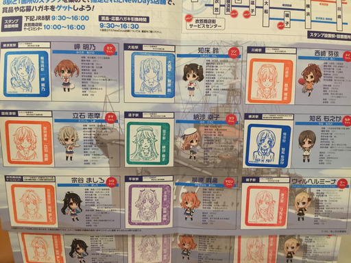
そこにある価値、立ちはだかる困難、そしてそこにある価値
行きの電車でパンを食べる、おいしい。
我々はメイちゃん駅でスタンプラリー台紙を手に入れる。
メイちゃんスタンプの在り処にたどり着くと、まだスタンプが設置されていないようだった。 (まだ09:30になっていなかった)
メイちゃん準備中の様子
もかちゃん駅
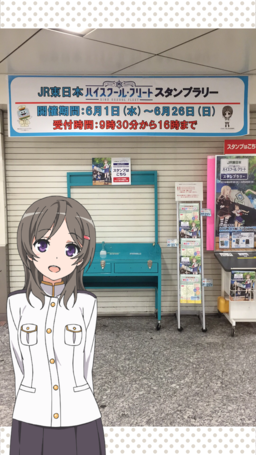
ミケちゃん駅ダッ！！
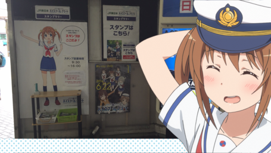 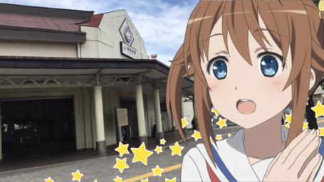
続く旅
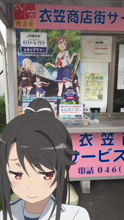 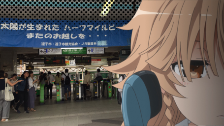 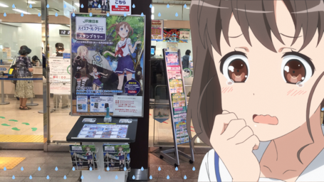 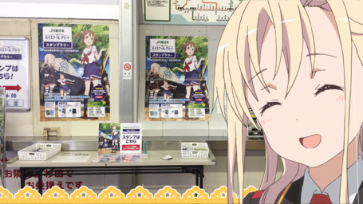
そして知らされる真実 ―クリアファイル配布終了済み―
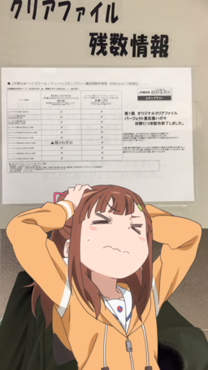
それでも旅は続くのだ、コンプリートのために
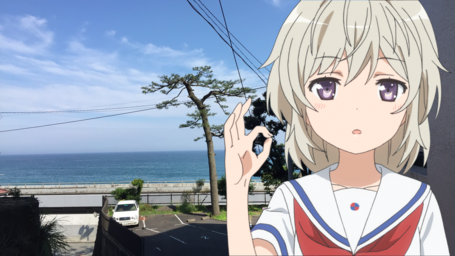 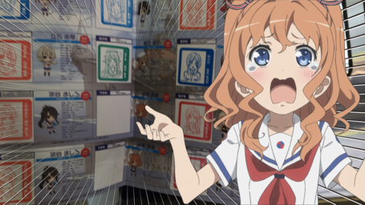
特にミケちゃん駅が綺麗だった。 すごいかなり。
我々の得た報酬
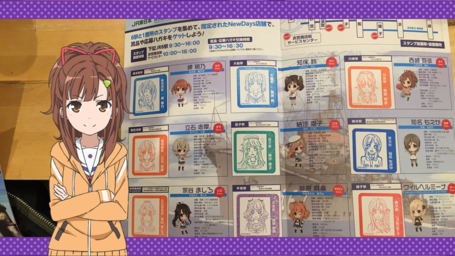
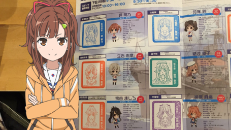
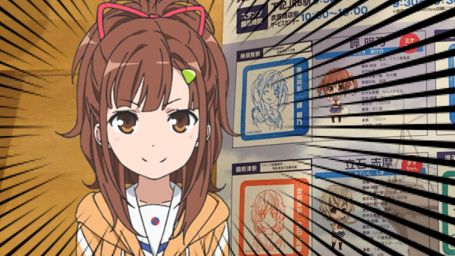
絶対可愛いやつやん…。
この記事はこちらから修正リクエストを送ることができます。
はいふりスタンプラリーにお母さんと行ってきた - github
ゴミ箱ボタンの左にある、鉛筆ボタンを押してね！